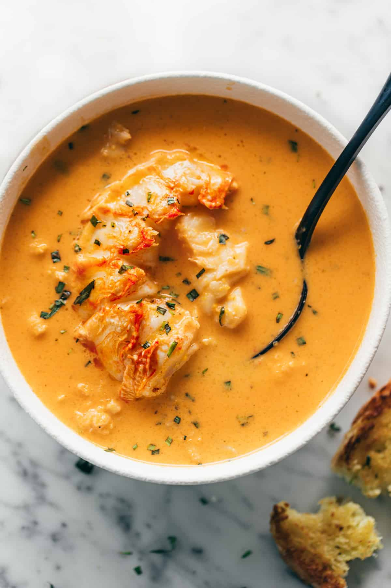

Lobster Bisque

Description
Smooth and creamy, our Lobster Bisque is always a crowd pleaser and has never been easier! Using lobster tails guarantees a rich and decadent bisque that cooks in under one hour.
Ingredients
Bisque
- 4 lobster tails
- 2 tablespoons butter
- 1 tablespoon olive oil
- 1 onion, finely chopped
- 2 carrots, peeled and finely chopped
- 2 stalks celery, finely chopped
- 1 teaspoon fresh chopped thyme
- 1 teaspoon fresh chopped tarragon, plus more to serve
- 1 teaspoon chicken bouillon powder
- 1/2 teaspoon salt
- 1/4 teaspoon fresh cracked black pepper
- 1/2 teaspoon cayenne pepper
- 4 cloves garlic, minced
- 2 tablespoons tomato paste
- 3 tablespoons all-purpose flour, (or plain flour)
- 1 1/4 cup dry white wine, or sherry
- 4 cups lobster stock (recipe as follows), OR seafood or fish stock
- 3/4 - 1 cup heavy cream
Garlic Butter Lobster Meat
- 2 tablespoons butter
- 2 cloves garlic, minced
- salt, pepper and cayenne, to taste
Steps
Lobster Stock
- Fill a large pot with 5 cups of water. Stir in 1 teaspoon sea salt and bring to a boil.
- Add the lobster tails, cover with lid and let boil for 5 minutes, or until bright red.
- Remove lobster tails, reserving the liquid stock. When the lobsters have cooled slightly, remove the meat from the shells, reserving the meat and any liquid that comes out of the shells.
- Return lobster shells back to the water in the pot. Bring to a boil, reduce heat to medium-low and let simmer for a further 15 minutes to draw as much flavour out of the shells as possible.
- While stock is simmering, chop the meat into bite-sized pieces and refrigerate.
Bisque
- Heat butter and oil in a large, heavy-based pot over medium heat, Sweat the onions, carrots, celery and fresh herbs. Cook until soft, about 5 minutes. Season with the bouillon powder, salt and pepper/s. Stir in 4 cloves of minced garlic and cook until fragrant, about 1 minute.
- Mix in tomato paste, cook for a further minute to coat vegetables. Sprinkle over flour and cook, while stirring occasionally for a further 2 minutes.
- Pour in wine, simmer and let reduce to half. Stir in lobster stock, reduce heat and gently simmer while stirring occasionally, until liquid has thickened slightly and flavours have blended, about 30 minutes.
- Take off the heat, transfer mixture to a blender and blend until smooth. Alternatively, purée with an immersion blender until very smooth. Return to medium-low heat and stir in heavy cream.
Garlic Butter Lobster Meat
- Melt butter a skillet pan over medium heat. Sauté garlic for 30 seconds, until fragrant. Add in chopped lobster meat, season with salt, pepper and cayenne to taste. Lightly sauté for 1 minute while stirring occasionally, until lobster meat is just warmed through.
To Serve Lobster Bisque
- Mix 3/4 of the lobster meat into the bisque. Pour into individual serving bowls. Top each bowl with remaining lobster meat and extra tarragon.